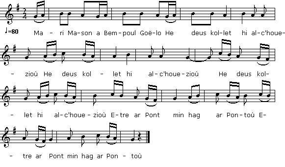

|
Tirée de "Kanaouennoù Pobl", chansons recueillies
par Alfred Bourgeois dans la deuxième moitié du XIXème siècle; le recueil a été publié en 1959 à Paris. Le Colonel Bourgeois a recueilli un texte qui diffère considérablement des versions du 1er Cahier de Keransquer et de celle publiée par Luzel dans "Gwerziou II". La mélodie ne convient ni aux unes ni à l'autre. Comme indiqué dans la Table des matières B destinée à l'édition 1845 du Barzhaz: "Marie Mançon" ou aussi "La plus belle des étoiles": chanté par Marie Jeanne Penquerh de Penanros en Nizon" (née Droal, 1806-1892, elle a aussi chanté le "Baron Jouisse" = Jaouioz). On peut supposer qu'il s'agit de la 1ère version, pp. 86-87, dont la première strophe contient ces mots. |
Tune included in "Kanaouennoù Pobl", a collection composed by Alfred Bourgeois in the second half of the 19th century, which was not published until 1959 (Paris). Colonel Bourgeois recorded lyrics noticeably different from those in the first Keransquer copybook and the version published by Luzel in "Gwerzioù, second Book". In fact the tune adequately scans neither the ones, nor the other. As stated in Table B of contents of the 1845 Barzhaz edition: "Marie Mançon" or "La plus belle des étoiles": sung by Marie Jeanne Penquerh from Penanros near Nizon" (née Droal, 1806-1892, who also sang "Baron Jouisse" = Jaouioz). We may suppose that this applies to the first version, on pp. 86-89, that includes these words in the first stanza. |
|
BREZHONEK MARIANNA MANSON p. 86 I 1. Ar vailhantañ plac'hik demeus ar c'hanton Larer eo Mariana Ar Manson. Hi a daole sklaer deus an holl verc'hed, Evel ma ra al loar war ar stered. 2. D'al leur nevez hi a zo bet aet Hag he c'hompagnez hi he-deus kollet Hag an hent da ger hi ne ouie ket. 3. Ar baron yaouank he-doa rankontret; - Mariana Manson, hag ur pok din-me rofec'h? [Prestit-c'hwi din-me ho kwerc'hded Hag ho mond d'ar ger me laoskfec'h] 4. - Na salokras, Baron, na rin ket! Na deoc'h-c'hwi, na da zen all ebed. - 5. Ne voa ket he c'homz peurlavaret, War lost an inkane voe taolet. D'e vereuri voe rentet. II 6. - Bonjour, merour ha merourez, Setu amañ unan demeus va teir mestrez. Ha mar gal, homañ a vo baronez! - 7. Hag eñ da bakañ he dornik koant Evit he kas gantañ d'al laez d'e gambr. - Dalit, Marianna, dalit hanter-kant skoed, 'N abeg da vagañ 'r baron bihan pa vo bet. p. 87 8. Kar me yelo bremañ d'an Naoned Da zizober al laez demeus va div vestrez. 9. - Va mallozh a roan dit da voned Mar eo d'an Naoned e yefec'h! 10. - Tavit, Mariana, tavit, na ouelit ket! Me ho eurejo 'benn vo pred Da va c'heginer, mar anezhañ karit... - III 11. Tri denik kos he-deus kavet Toud o zri o vont da labourat. 12. - Va zadik paour, digorit an nor din! Poan ar bugale a zo ur boan griz. 13. - Tec'h-ta du-se 'ta, mizerablez! Dizinour a rit d'ho preur belek Ha da ziv dimeus ho c'hoarezed! - 14. Hi da vont korn ar park, en ar valanenn: Ur verc'hig vihan he-doe ganet. Ur verc'hig vihan kaeroc'h hag an deiz. D'ur baron yaouank e larer eo merc'h. 15. Ur verc'hig vihan, kaer evel an heol! D'ar baron yaouank, e lare toud, ez eo. Hag hi he-deus he lakaet diwar he barlenn Hag he-deus he krouget gant liamm he fenn. p. 88 16. Ha da voned ganti diwar bordik ar staer: Ennañ neuze he-doe he beuzet. IV 17. 'Benn oa daou pe dri devezhoù goude-se, Med an archerien a oa o vale. Mariana Manson oa a faote dezhe... 18. Mariana Manson hag a lavare. War ar varn huellañ pa bigne: 19. - M'am-befe un tammik bihan amzer Pluñv ha liv ha neuze paper, Me skrivfe d'ar baron da zont d'ar ger. - V 20. Mez ne oa ket evit he lennet vat Gant e zaeroù o tont dimeus e zaoulagat. 21. - Tennit daouzek marc'h dimeus ar marchosi Hag ekipit o mat evit mont di. 22. Mar e vankfe din-me hanter-kant Raok vo deiz m'eo red digoued gant ar Poullbran. - VI 23. Barzh ar Poullbran pa erruas, Un tenn pistolenn a loskas. 24. - Ar bourev d'an traon a ziskaras. - Mar vije krouget Mari ar Manson M'em-bije lakaet glac'har war ar ger-mañ. p. 89 25. Prokurer ar Roue a vije krouget Hag ar Senechal, ha toud ar re all. 26. - Oh, Mariana, oh, din-me lavarit Ho merc'hig vihan, perag 'peus ket miret? 27. - Petra m'em-bije me graet inosantez Pa n'am-boa na laez na yod da reiñ dezhi? - 28. Mari Manson a lavare, E troad ar c'hroaz pa bigne: 29. - Tostait amañ, va ziwallerien Ha c'hwi kenkoulz va merourien, 30. Bout e vin aet da varnerez, Ne vin ket evidoc'h gwall 'bed. 31 Digorit-c'hwi an holl dorioù evit teui an holl Evit teui an holl peorien, toud war va zro. 32. Dezhi, kar boud emaon bremañ baronez. Me a zo bet nav miz klaskerez. - |
TRADUCTION FRANCAISE MARIANNE LE MANSON p. 86 I 1. La plus vaillante fille du canton C'est Marianne Le Manson, nous dit-on. Elle brillait parmi ses commensales Comme la lune au milieu des étoiles. 2. A l'aire neuve un jour elle est allée De sa compagne elle fut séparée. Rentrant en ville, s'est égarée. 3. Le jeune baron elle a rencontré: - Donnez-moi, Marie Manson, un baiser! [Et prêtez-moi votre virginité; Ensuite chez vous, vous pourrez rentrer.] 4. - Sauf votre respect, je n'en ferai rien: Je n'embrasse jamais, sachez-le bien! - 5. Elle ne put achever son discours, Il l'a prit en croupe et l'enleva pour La mettre en une ferme à l'entour. II 6. - Bonjour à vous, fermière et vous fermier! Voici l'un de mes béguins préférés, La future baronne, qui sait? 7. Par la main il la saisit aussitôt, Et l'a conduite à la chambre du haut. - Marianne, ces cinq cents écus tout rond Sont là pour nourrir le petit baron! p. 87 8. Je me rends à Nantes, dès à présent, Rompre avec mes maitresses, il est temps. 9. - Que ma malédiction soit sur toi, Si c'est vraiment à Nantes que tu vas! 10. - Taisez-vous, Marie, cessez de pleurer! Ou je vous marie, quand tout sera prêt, A mon cuisinier si vous préférez! - III 11. Elle a rencontré trois vieillards courbés Qui tous trois à leur labeur se rendaient. 12. - Mon père, laissez-moi rentrer chez moi: Mal d'enfant est l'un des pires qui soit. 13. - Misérable, disparais sur le champ! L'honneur de ton frère prêtre en dépend. Celui de tes deux surs tout autant! - 14. Et au coin du champ dans la genêtière Elle mit au monde à même la terre Une fille belle comme le jour. Née dit-on de ces brèves amours. 15. Belle comme du soleil les rayons Et tous la croient la fille du baron. Elle la prit sur son giron pour mieux L'étrangler du ruban de ses cheveux. p. 88 16. Une rivière coulait près de là, Où le petit corps mort elle plongea. IV 17. Il s'était passé deux ou trois journées Quand les gendarmes vinrent en tournée. Marianne Manson est recherchée... 18. Marianne Manson soupirait bien fort Quand le tribunal décida sa mort: 19. Si l'on m'accordait un peu de répit, Et de quoi rédiger un mot d'écrit Alors le baron viendrait ici. - V 20. Cette lettre il s'efforça de son mieux De la lire, des larmes plein les yeux. 21. - Prenez douze chevaux à l'écurie Equipés pour une longue sortie. 22. Et prenez-en cinquante s'il le faut Je dois être à Poulbran demain très tôt! - VI 23. A Poulbran lorsqu'enfin il arriva C'est un coup de pistolet qu'il tira. 24. C'est ainsi qu'il abattit le bourreau. - Si Marie eût péri sur l'échafaud Je vous eusse châtié comme il faut: p. 89 25. Procureur du roi, je t'aurais pendu, Le sénéchal et ses sbires en sus. 26. - O Marianne, dis moi-donc à présent Pourquoi n'as-tu pas sauvé cette enfant? 27. - Cette innocente, comment la garder? N'ayant de bouillie, ni même de lait? 28. Marie Le Manson disait ce jour-là Quand elle montait au pied de la croix: 29. - Approchez, vous qui fûtes mes gardiens Et êtes mes métayers, aussi bien! 30. Bien que je sois votre juge à présent Je ne vous veux pas de mal, pour autant. 31. Ouvrez les portes, ouvrez-les tout grand, Afin que les pauvres viennent céans! 32. Baronne, je n'oublie pas pour autant Que je fus mendiante neuf mois durant. Traduction: Christian Souchon (c) 2014 |
ENGLISH TRANSLATION MARION LE MANSON p. 86 I 1. The fairest of girls, near and far, Was Marion Manson they all said. Shining among the other maids As does the moon among the stars. 2. She went to a new threshing floor; She got soon parted from her friends And knew not the way to her door. 3. She encountered the young baron: - I want a kiss, Marion Manson! [And lend me your virginity, Then I'll leave you at liberty.] 4. - I never kiss, sir, with your leave, A thing I want you to believe... - 5. She could not finish: By sheer force He lifted her upon his horse, Took her to his nearby farm house. II 6. - Farmer, farmer's wife, I greet ye! Here's my mistress number three. Maybe my baroness and spouse - 7. To take her hand he did not scorn And led her to his room upstairs. - Here, fifty crowns to sooth your cares About the baron to be born. - p. 87 8. - If I'm leaving to Nantes it is To break there with the two ladies. 9. - My curse on you if you offend Me by going to Nantes to that end! 10. - Stop crying or I shall be coarse: I'll marry you off in due course To the cook, if you'd rather like! - III 11. Three old men were coming her way, Were beginning their working day. 12. - Father, open your door again! No pain's so dire as labour pains! 13. - Away with you, unworthy beast! You dishonour your brother priest, Your two sisters not to mention! - 14. The nearby broom field was the bed Where she's given birth to a girl Who was, aye, as fair as a pearl: The baron's daughter, they all said. 15. A girl as fair as daybreak sun Whose sire all say was the baron. She laid the baby in her lap Strangled it with her hair dress strap. p. 88 16. Then she went to the river bank Where the little body she sank. IV 17. And two or three days later on, To arrest Marion Manson, The constables were on their rounds... 18. How did Marion Manson lament, Since she would the scaffold ascend! 19. - Had I more time and a taper And pen and ink and some paper, I would ask the baron to come. - V 20. The baron had trouble reading With eyes with tears overflowing. 21. - Take twelve horses from the stable: To get there I must be able, 22. Or take fifty, if it need be, To get there tomorrow early! - VI 23. When he arrived in Poulbran town He shot his pistol at random 24. And the hangman was tumbling down. - If he had hung Mary Manson I had devastated this town! p. 89 25. Crown attorney, I had hung you, You Seneschal and henchmen, too! 26. - But Marion, tell me, if you will, Why were you as cruel as to kill? 27. - How was I that poor child to heed, With no milk or porridge, to feed? - 28. Marion Manson has said that day Standing near the cross by the way: 29. - Come on, my prison warders both! Now, you're my farmers. Nothing loath! 30. Though I'm called upon to judge you I do not wish to cause you woe. 31. Open the gate, open it wide! Alms to the poor I shall provide! 32. I'm a baroness but I don't Forget these nine months spent in want. - Translation: Christian Souchon (c) 2014 |
|
Bibliographie: Manuscrits: - Coll. Penguern, t.89: Mari ar Manson (Taulé, 1851) (=Gwerin 4). - Luzel: Nouvelles acquisitions françaises de la BNF, 3342, 417: Marie Le Masson (Plouaret) (trad.). Recueils: - Luzel, Gwerzioù tome 2: Marie ar Mason (Plouaret, 1848). - Bourgeois, Kanaouennoù Pobl: Gwerz Mari Masson. - Yves Le Diberder, Chansons traditionnelles du pays vannetais, vol. 2, Mari er Mason ag er Goélow, (Pont Scorff, 1912). L'infanticide Cette gwerz raconte l'histoire d'une jeune fille déshonorée par un baron, puis rejetée par sa famille et qui devient infanticide. Elle illustre les comportements et les sensibilités au sein de la société bretonne d'avant la révolution où la paysannerie était en contact direct avec la noblesse locale. On y devine aussi le fonctionnement complexe de l'institution judiciaire. Selon toute vraisemblance, la trame repose sur un événement réel: Qu'elle soit paysanne ou bourgeoise, Marie appartient à une couche sociale où la défense de lhonneur compte beaucoup pour le prestige des familles et qui sanctionne par le rejet les écarts de conduite des femmes constituant une menace pour linstitution familiale. Baron ou juge? Si la jeune femme est sans doute issue d'un milieu de notables, si son frère est prêtre, elle n'est sans doute pas noble. En tout cas son séducteur ne semble pas pressé de lui conférer le titre de baronne dont elle se pare à la fin de plusieurs versions de la gwerz. Remarquons que la version 2, strophe 6, fait du baron un juge ("barner") qui promet à la jeune femme qu'elle deviendra femme de juge ("barnerez", strophe 10), alors que la dernière strophe nous apprend que Marie s'est mariée et est devenue baronne ("baronez"). Il peut s'agir de noblesse de robe ou d'une confusion entre les mots "baron" et "barner". Il est dit à la strophe 22 que, quand le messager de la dame est arrivé à Morlaix, le jeune juge était en train de faire [la] cour ("oc'h ober laez"). Je ne suis pas certain que cette expression s'applique à l'activité d'un magistrat au sein d'une cour de justice. La justice était autrefois omniprésente en Bretagne comme le constatait l'intendant Béchameil de Nointel dans un célèbre rapport de 1698: "Le droit de juridiction est attaché au fief, en sorte qu'il n'y a aucun fief de si petite étendue qui n'ait sa justice et ses officiers." Et cette justice disposait d'"auditoires" (=tribunaux) et de prisons dans les lieux les plus divers, ainsi que d'une multitude d'hommes de loi: deux mille procureurs, notaires et sergents pour la sénéchaussée d'Hennebont selon les observations de Charles Colbert (le frère de Jean-Baptiste) en 1665. Le seigneur ne rend jamais la justice par lui-même mais est représenté par un sénéchal qui travaille en collaboration avec un procureur fiscal censé représenter l'intérêt public et un greffier qui rédige les actes et conserve les archives. Les plaignants et accusés sont représentés par les procureurs. Les sergents (archerien) sont le bras armé de cette justice. La présente gwerz met en scène ces différents acteurs. Il n'est pas question d'interprète et l'on peut supposer que la procédure se déroule en français uniquement. On voit, à la strophe 25 de la version 1, le baron que l'on nous présente comme un grand personnage capable d'atteler cinquante chevaux à son carrosse (!) et au nom de qui, peut-être, ce jugement a été rendu, défier tout cet appareil judiciaire, interrompre l'exécution en tirant sur le bourreau (!) et reprendre la procédure à son propre compte, contrairement à l'adage qui interdit que l'on soit à la fois juge et partie. Quoi qu'il en soit du caractère hyperbolique de cet épilogue qui semble emprunté à d'autres ballades, les exemples de résistance individuelle (potentats) ou collective (menu peuple) aux décisions de justice abondent dans les archives. Baron et parrain? Une autre confusion possible apparaît dans la version 3: s'il est question d'un "Baron Polb(a bon)" à la strophe 24 et si Marie devient "baronez" à la dernière strophe, le séducteur est tout d'abord désigné aux strophes 4 et 5 par le mot "paeron" qui signifie "parrain". M. Donatien Laurent a considéré qu'il s'agissait d'une méprise et a traduit ce mot par "baron". On peut toutefois prendre le mot au sens propre. La conduite de ce parrain qui séduit sa propre filleule n'en est que plus condamnable. Tout comme les aumônes dont il est question à la fin de la version 1, l'obtention d'un parrainage prestigieux est un signe primordial d'ascension sociale pour les membres d'une famille aisée. La gwerz ND du Folgoët en fournit un autre exemple. Viol ou Donjuanisme? Les agissements du Baron tels qu'ils sont décrits dans les diverses leçons de la gwerz ne sont pas toujours constitutifs d'un viol caractérisé. Même s'il profite de ce que Marie soit seule, il obtient ses faveurs par la séduction agrémentée de promesses, plutôt que par la contrainte. Une fois qu'il est arrivé à ses fins, sa conduite est, cependant, celle d'un cynique qui renie d'abord sa parole. Bien entendu, le baron, lui jure aussitôt "e vije tad he bugale" (qu'il sera le père - légitime, s'entend - de ses enfants, à elle). Sur quoi, il l'entraîne, par le petit doigt, vers un champ de genêts, dont Marie revient en déplorant d'être désormais une pécheresse ("Bremañ, siwazh, on pec'herez"). Plus tard, quand Marie est enceinte, il lui donne cent écus pour nourrir "son" fils (à elle, he map), tandis que lui part pour Morlaix faire la cour à une héritière qu'il se propose d'élever au rang de baronne. La conduite du baron devient alors hautement répréhensible, d'autant que l'histoire se termine de façon abrupte par l'infanticide. Luzel qui n'éprouve pas de sympathie particulière pour l'aristocratie, aurai-t-il refusé au baron l'occasion se racheter, en écourtant le récit? A la fin de la complainte, le baron, rappelé par une lettre de Marie, a l'insolence de lui faire la morale : "Marie, vous n'avez pas été sage d'avoir maltraité votre enfant. Je pensais vous avoir mis en lieu sûr quand je vous ai envoyée chez votre père". Celle-ci lui révèle qu'ayant été rejetée par son géniteur, elle a vécu neuf mois dans les prés se nourrissant d'herbes. D'autre part on apprend au cours de la complainte ce qu'il faut entendre par "maltraité son fils": elle l'a jeté dans la rivière! Les trois versions La Villemarqué Elles enrichissent encore cet inventaire du donjuanisme, tout en prolongeant la narration par un épisode a priori invraisemblable. Viennent ensuite des épisodes dramatiques: le rejet par le père, l'accouchement dans un champ de genêts et l'infanticide par strangulation et noyade; l'arrestation de la jeune femme, la lettre écrite dans le cachot au baron. L'histoire prend alors un tour rocambolesque: le baron met fin à l'exécution en tirant sur le bourreau! Il se rachète une conduite en faisant généreusement l'aumône et en épousant celle qui fut neuf mois mendiante... Elle détaille d'avantage tous les éléments des deux versions précédentes et n'en ajoute qu'un seul: le baron qui n'est pas présenté comme un coupable potentiel mais comme un intervenant judiciaire, déclare vouloir punir le père de Marie. Contaminations Comme on le voit, si toutes les variantes soulignent la cruauté du père qui abandonne sa fille dans la détresse, dans aucune la conduite scandaleuse du baron ne semble être formellement condamnée par le narrateur, ce qui en dit long sur la mentalité d'une société entièrement dominée par les hommes. Seules les versions La Villemarqué montrent la malheureuse infanticide réhabilitée in extremis par son ravisseur revenu en hâte et accédant même au titre de baronne. Cet heureux coup de théâtre semble provenir de la contamination par d'autres gwerzioù telles que Le page de Louis XIII, comme l'indique le nom de "Bodinio" qui surgit à la strophe 28 ter de la version 3. A sa façon, cette gwerz illustre, comme la gwerz du Clerc Le Loyer, l'interaction entre deux classes sociales, la petite noblesse et la paysannerie enrichie, un siècle avant la révolution. Mais c'est surtout avec la gwerz ND du Folgoët que cette pièce présente le plus de similitudes. On peut penser que La Villemarqué s'en est inspiré dans les épisodes relatifs à la découverte du petit cadavre (str. 8 à 12) et à la recherche d'aveux par la marraine (str. 24 à 28). On trouvera dans les trois derniers chapitres des commentaires de ce même chant, des indications relatives à l'édit royal de 1556, à l'infanticide et à l'histoire des mentalités qui auraient tout autant leur place dans la présente discussion. |
Bibliography: Manuscripts: - Coll. Penguern, t.89: Mari ar Manson (Taulé, 1851) (=Gwerin 4). - Luzel: New French acquisitions of the French National Library, 3342, 417: Marie Le Masson (Plouaret) (in transl.). Collections: - Luzel, Gwerzioù Book 2: Marie ar Mason (Plouaret, 1848). - Bourgeois, Kanaouennoù Pobl: Gwerz Mari Masson. - Yves Le Diberder, Traditional Songs of the Vannes Bishopric, Part 2, Mari er Mason ag er Goélow, (Pont Scorff, 1912). Infanticide This ballad records the story of a girl dishonoured by a baron and rejected by her family, who eventually commits infanticide. It highlights the sensitivity to social environment and the adjustments of behaviour in Breton society prior to the 1789 revolution, among country folks in contact with local gentry. Furthermore it provides information on the working of judicial institutions. We may infer from the following considerations that the plot should be based on real events: Whether she be a country girl or a middle-class city dweller, Mary belongs to a social class that would do anything for the sake of preserving the honour of their families, inclusive of expelling women convicted of demeanour that could impair the fabric of society. Baron or judge? If the heroine is born of well-off surroundings, if her brother is a clergyman, the chances are that she is not a noble girl. It appears clearly that her seducer is not anxious to entitle her to the baronial dignity she acquires at the end of diverse versions of the gwerz. It is remarkable that version 2, stanza 6, should make of the baron a judge ("barner") who promises the girl to make of her a judge's wife ("barnerez", stanza 10). The last stanza really confirms that Mary got married and became a baroness ("baronez"). Either this man's nobility is "of the robe" or there is confusion between the words "baron" and "barner". We read in stanza 22 that, when the girl's messenger arrived at Morlaix, the young judge was "paying court" ("oc'h ober laez"). I wonder if this expression could not refer to a magistrate's activities at a court of justice. Judicial institutions were omnipresent in Brittany, in former times, as stated by Intendant Béchameil de Nointel in his famous 1698 survey: "A right of jurisdiction is claimed by each fief owner. Therefore there is no fief, however small, that will not have judicial premises and officers of their own." This justice availed itself of "auditoriums" (=courts) and jails all everywhere, and of a multitude of lawyers of all sorts: two thousand attorneys, solicitors and constables for the sole seneschalsy of Hennebont as recorded by Inspector Charles Colbert (Minister Jean-Baptiste Colbert's brother) in 1665. The lord never dispenses justice by himself but he is represented by a Seneschal who collaborates with an "Attorney Fiscal" supposed to speak in the general interest and a clerk of the court who draws up acts and keeps judicial records. Plaintiffs and defendants are represented by barristers. The constables ("archerien") are the sword arm side of this justice. The piece at hand stages these different characters. It does not mention an interpreter, so that we may assume that French is the language used in these proceedings. At stanza 25 of version 1, the Baron who must be a very prominent person, capable of hitching up fifty horses to his carriage (!) and in whose name the sentence possibly was passed, challenges all this judicial machinery, stops the execution by shooting at the hangman (!), and resumes the proceedings in his own way, in defiance of the adage to the effect that "one never should be both judge and defendant". Even if this epilogue is, apparently, a fantastic borrowing from other ballads, instances of such individual (by potentates) or collective (by common people) withstanding the law are not rare in Brittany's judicial records. Baron and godfather? Another confusion could have been made in version 3: the seducer is named "Baron Polb(a bon)" at stanza 24 and Mary becomes a "baronez" in the last stanza. But the said seducer was first, at stanzas 4 and 5, dubbed as "paeron" which means "godfather". M. Donatien Laurent evidently considered it a (handwritten) typo and translated this word as "baron". It is however possible to take it literally. The conduct and character of this godfather who seduces his own godchild are all the more contemptible. Like the alms addressed at the end of version 1, obtaining from prominent people that they should stand godfather or godmother to a child was a pivotal element of social promotion for a well-off family. The gwerz Our Lady of Folgoët provides us with another instance thereof. Rape or donjuanism? The schemes of the Baron as described in the different variants of the ballad are not always tantamount to rape. Even if he avails himself of Mary's being alone, he seems to obtain her favours by means of a mix of seduction and promises, rather than by acting by force. But once he has achieved his aims, his conduct becomes cynical and he immediately goes back on what he has promised. Of course, the baron immediately swears "e vije tad he bugale" (he will be a - legal - father to her children). And they walked, holding each other by the little finger, to a broom field, whence Mary went back lamenting that she was now but a sinner ("Bremañ, siwazh, on pec'herez"). Later on, when Mary is pregnant, he gives her hundred crowns to feed "her" son (ho map). As for him, he is leaving to Morlaix where he will woo an heiress, whom he intends to raise in the rank of a baroness. The baron's behaviour becomes all the more blameworthy, as the story ends up abruptly with the killing of the child. Did Luzel, who evidently harboured no particular sympathy for aristocrats, deny the Baron the opportunity of making amends, by cutting down the narrative? At the end of the lament, the Baron, called back by a letter sent by Mary, has the audacity to lecture her: "Mary, you were ill-advised to manhandle your child. For safety's sake I had sent you to your father". Mary discloses that she has been in fact expelled from home by her father, and has lived during nine months in the fields, eating herbs. Incidentally, in the course of the song, we hear what was meant by "manhandling her son": she threw him into the river! The three versions in La Villemarqué's copybook They enhance this inventory of donjuanism, by appending to the narrative an a priori incredible epilogue. The next episodes are tragic: she is abandoned by her father, she gives birth to a child in a broom field; she strangles and drowns the child; the young woman is arrested, in the jail she writes a letter to the Baron. Then the story becomes fantastic and incredible: the Baron puts an end to the execution by shooting at the hangman! He makes amends for his bad behaviour by providing magnanimous alms and marrying the girl whom he had reduced to be a beggar during nine months... More than the two foregoing, this version gets into details, appending only one new element: the Baron who never appears as a possible convict, but as a judicial officer, proclaims that he will sacrifice some money to punish Mary's father. Contaminations It is evident that, if all versions highlight the cruelty of the father who abandons his own daughter in distress, in none of them the outrageous conduct of the Baron seems to be definitely condemned by the narrator, which gives an insight into the mentality of the macho societies, in olden times (?). Only in La Villemarqué's versions do we see the unfortunate woman's good name restored in the last minute by her abductor hurrying to bestow on her the dignity of a baroness. This lucky coup de theatre seems to be derived, through contamination, from such other gwerzioù as The page of Louis XIII, as suggested by the sudden appearance of the place name "Bodinio" in stanza 28 ter of version 3. This gwerz somehow illustrates, as does the gwerz of Clerk Le Loyer the interaction between two classes of the society, gentry and enriched country folks, a hundred years or so before the French revolution. Yet it is with the gwerz Our Lady of Folgoët that the present song has most similarities. We may assume that La Villemarqué was inspired by it for the passages relating to the discovery of the little corpse (st. 8 witj 12) and to the godmother's attempt to obtain a confession (st. 24 with 28). The information given in the last three chapters of the comments to the said song concerning, in particular the Royal Edict of 1556, infanticide and the history of mentalities is also relevant for the present discussion. |
|
BREZHONEK MARIONA MANZON p. 140 I 1. D'al leur nevez oa hi aet. He gwalen aour he-deus kollet. 2. Ur baron yaouank en-deus kavet. Deus Mari Manzon en-deus nac'het. 3. - Mari Manzon, din lavarit, Pelec'h ez it gant hent ken diwezhat? 4. - E-barzh al leur nevez emaon bet Va alc'hwezioù am-eus kollet. Va gompagnez araok zo aet. II 5. - Marion Manzon, din lavarit, Pe-mar me karit, pe na rit ket. 6. - Neket me eo eus ar seurt-mañ Ranke ho karoud, barner yaouank! 7. Me rank karoud den eveldon A proffe din-me eurejiñ. 8. - Mari Manzon, mar n'am kredit ket, Lakomp fiziañs e Doue, mar karit. p. 141 9. Setu amañ ar vereuri Ha pemp kant skoed a-benn enni Hag un den-a-gambr d'ho servijiñ. 10. Me n'am-eus ket afer ho mereuri Nag ho pemp kent skoed a-benn enni Nag ho den-a-gambr o servijiñ! 11. - Me 'ya un tammig da Vontroulez Pa zeuy d'ar ger, 'vioc'h barnerez. - 12. Mari Manzon adal ma glevas D'Ar Boull-Goaloù prompt a eas. 13. - Va zad, digorit din ho tor! Ho merc'h Mari a c'houl digor! 14. - Tec'h du-se demeus toull va dor Pe me laosko va chas te divour. - 15. Hi eo aet d'ar parkik dreñv an ti, Ganas ur verc'h kaer vel an deiz, Heñvel d'ar barner e oa bet. p. 142 III 16. 'Benn an tri pe pevar devezh goude 'Teuas ar senechal da vale. 17. - Mari Manzon, din lavarit, Petra d'ho merc'hik ho-peus graet? 18. - Aotroù Senechal, em eskuzit, Merc'hik e-bed n'am-eus bet. 19. - Gaou a lares, dre gwad da zad, Kar az-peus ganet merc'h pe mab. - 20. Aotroù Senechal, adal ma glevas, En hent d'Ar Boull-Goaloù en em lakas. 21. Ar greffierez a lavare Da Vari Manzon p'he wele: 22. - Mari manzon, skrivit ul lizer, Tud awalc'h a vo d'he kas d'ar ger. - 23. Pa oa digouet da Vontroulez Edo ar barner yaouank oc'h ober laez. IV 24. Tudjentil Poull-Goaloù a lare: - Petra nevez so erruet pa zon? 25. - Dimeet eo Mari Manzon Ha da varonez eo aet, Ha da varonez eo aet. - |
FRANCAIS MARIANNE MANZON p. 140 I 1. A l'aire neuve elle s'était rendue. Et sa bague d'or, elle l'a perdue. 2. Le jeune baron qui l'avait trouvée. A Marie Manzon il l'a refusée. 3. - Marie, je m'étonne ici de vous voir. Que faites-vous sur les chemins si tard? 4. - Je viens de l'aire neuve où je pensais Avoir égaré mon trousseau de clés. Mon amie sans moi s'en est allée. II 5. - Ah, me direz-vous, Marianne Manzon, Si vous m'aimerez un jour, oui ou non? 6. - Ce n'est pas une fille comme moi, Mon jeune juge, qui vous aimera. 7. Moi j'aimerai quelque brave garçon Qui voudra bien m'épouser pour de bon. 8. - O Marie, si vous ne me croyez pas, Vous ferez confiance à Dieu, n'est-ce pas! p. 141 9. Mes fermiers savent ce qui leur est dû: Il leur échoit cinq cents écus en sus Et vous un valet, bien entendu! 10. Je me moque bien, moi, de vos fermiers! Des cinq-cents écus que vous leur donnez! Tout autant que de votre valet! 11. - Je dois séjourner un temps à Morlaix. Nous nous marierons quand je reviendrai! - 12. Marie Manzon en entendant ces mots, A Poulgoëlo s'est rendue aussitôt. 13. - Mon père, ouvrez la porte, je vous prie, Ouvrez donc, à votre fille Marie! 14. - Eloigne-toi du seuil de ma maison, Ou sinon mes chiens te dévoreront! - 15. C'est dans un champ derrière la maison Qu'elle a mis au monde un bel enfant blond Qui ressemble au juge, assure-t-on. p. 142 III 16. Ensuite, au bout de trois ou quatre jours Le sénéchal est venu faire un tour. 17. - Marie, il faut bien que vous me disiez: Votre fillette, qu'en avez-vous fait? 18. - Monsieur le Sénéchal, excusez-moi! Mais cette fillette n'existe pas. 19. - Ah, par le sang de ton père, tu mens! Fille ou gars, tu mis au monde un enfant! 20. Sur ce, le sénéchal est retourné A Poulgoëlo sans plus s'attarder. 21. La greffière, lorsque Marie survint, Lui cria dès qu'elle la vit de loin: 22. - Marie Manzon, écrivez un billet, Nous trouverons des gens pour le porter. - 23. Lorsqu'à Morlaix il lui fut délivré, Le juge, à la cour, était à plaider (?). IV 24. Les nobles gens de Poulgoëlo disaient: - Mais pourquoi fait-on ces cloches sonner? 25. - Marie Manzon vient de se marier. Et elle est baronne, à n'en point douter! Elle est baronne à n'en point douter! Traduction: Christian Souchon (c) 2014 |
ENGLISH MARIANNE MANZON p. 140 I 1. To the new threshing floor dance she had gone And had lost there her golden ring. 2. The young baron found it But refused to give it back to Mary Manzon. 3. - Mary Manzon, tell me, Why are you walking the streets so late? 4. - I was at the new threshing floor Where I have been looking for my lost keys. My girl friend has gone ahead. II 5. - Marion Manzon, tell me: Do you love me or not? 6. - I am not the sort of girl That will love you, young judge! 7. I must find a man in my station Who would offer to marry me. 8. - Mary Manzon, if you don't believe me, Let us trust in God, if you want. p. 141 9. Here is a farmstead of mine, And five hundred crowns in addition, Plus a manservant to serve you. 10. - I don't care for your farmstead I don't care for your fiver hundred crowns For your manservant as well. 11. - I 'll go for a while to Morlaix When I come back, you'll be judge's wife. - 12. Mary Manzon, when she heard it Repaired quickly to Poulgoëlo. 13. - Father, open the door to me! It's your daughter who requests admittance. 14. - Leave my threshold, Or I unleash my dogs on you! - 15. Now she went to the little field behind the house Gave birth to a girl as fair as the day Who bore a likeness to the judge. p. 142 III 16. Three or four days later The Seneschal came round. 17. - Mary Manzon, tell me, What is the matter with your daughter? 18. - Lord Seneschal, with your leave, I don't know of any daughter! 19. - You lie, by the blood of your father! You gave birth to a daughter or to a son! - 20. After this interview the lord Seneschal Made his way to Poulgoëlo. 21. The clerk of the court said To Mary Mazon, when she saw her. 22. - Mary Mazon, write a letter. We shall find enough people to deliver it. 23. When the messenger turned up in Morlaix The young judge was [pleading?] before the courts. IV 24. The noblemen in Poulgoëlo did say: - Why do the bells ring? 25. - For Mary Manzon's wedding: She has become a baroness! She has become a baroness! - |
|
BREZHONEK MARI AR MANSON [1] p. 189 I 1. Mari 'deus kollet he alc'hwezioù O voned en nozh d'an holl festoù O c'hoari an diñs hag ar c'hartoù, 2. El leur nevez pa oa digouet Un tour zañs gant an aotroù he-deus graet. 3. Ha d'al leur nevez hi a oa aet Ha d'ar ger endro oa distroet. 4. Paeron Poullbabon he-deus kavet: - Mari, p'lec'h ema ho kompagnunezh? 5. - N'am-eus kompagnunezh ebet 'Met va levrioù ha va chapeled. Deoc'h paeron Poullbabon, pa oc'h digouet: - 6. - Konduit me d'ho mereuri, emezi, Em gasfec'h ganto tud ho ti. 7. - Eurvat d'an holl dud ar vereuri! Mirit-c'hwi Mari Ar Manson din Ma 'z ean da Bariz d'ober al laez. - II 8. Mari Ar Manson e oa anezhi laeret. Bremañ da di he zud ez eo aet. p. 190-1 9. -Va zadik paour, mar am c'harit, An nor din-me a zigorfec'h! 10. - Te az-peus dizenouret da c'hoarezed Hag a wassoc'h c'hoazh da vreur belek! 11. - Digorit an nor hag a yen en ti Rag poan a vugale a zo poan kriz. 12. - Tec'h alase deus doull va dor! Bremañ az-peus kollet da inour. 13. Kerzh alese 'maez deus va zi! Pe me lako va c'hi da zebriñ! - III 14. Mari a zo aet gant ur glac'har braz Mont d'ar park balan glaz. 15. Ur plac'hik bihan he-deus ganet: Div jodik ruz, daoulagadik glas Deus baron Poullbabon a oa aon bras. 16. - Ma merc'hig vihan na ouelit ket Kar pell da vevañ c'hwi n'ho-peus ket. - 17. Hag hi da denn liamm he fenn Hag hi d'he krougañ deus ur brank wezenn. 18. Ha marichal koz hag e vereurien Ez ae da chaseal raok o lein. 19. Ha kentañ an deiz oa hi kavet Hag a oa daou zen o 'chaseal ar c'had. 20. - Amañ zo ur c'had diskrogenet [kignet] Pe ur c'hreadur gwalennet. - p. 190-2 21. Hag int da zoñjal o daou 'n o c'halon Piv a oa brazez er c'hanton. 22. A benn ur boutadik goude-se A oa an archerien o vale. 23. Hag int da vont da soñjal dezhi Hag a oa brazez er c'hontre. 24. Mari Ar Manson oa tapet. E prizon Roazhon oa lakaet. 25. - Digasit-c'hwi din pluenn ha lizher Ha me a skrife ul lizher Da gas da Baron Poullbabon da Gemper. IV 26. - Lakit-c'hwi c'hwec'h marc'h deus va c'haros! Me yelo da Roazhon ha fenos. 27. Mar n'eus ket awalc'h, lakit daouzeg, Kar m'em-eus ur c'hantvet a gezek. Mari Ar Manson a vo diskrouget! 28. Mari Ar Manson zo va mestrez Ha n'ema ket anezhi barzh ur plas aes. - (28. bis) [- Pevarugent lev pe war-dro Zo deus-a Bariz ha Bodinio] (28. ter) [Ha me 'm-eus hen graet en un nozvezh Ha n'on-me chomet pell war ar plas. -] 29. E ger Roazhon pa erruas, Tenn fuzuilh d'ar borev a reas: 30. Un tenn a vousket en-deus laosket Ar bourev d'an traoñ eo diskennet. 31. Mari Ar Manson a ziskennas. - Mari Ar Manson, larit ar wirionez Me ya da brokuriñ vidoc'h bremañ. 32. - Na mab na merc'h n'am eus ganet, Med an gwall deodoù 'deus va droukprezeget. 33. - Mari Ar Manson ha ma mestrez Ha c'hwi a zo ur pec'herez. 34. Mari Ar Manson, lar ar wirionez! Rag me brokuro evidoc'h bremañ. - 35. War he zaoulin en em lakas Da c'houl pardon gant ar baron. p. 191-1 36. - Ur verc'hig vihan am eus ganet: Ar bravañ krouadur war ar bed. 37. He divjodik ruz a oa aon braz D'ar Baron hag he daoulagat glaz. 38. Ha pell da vevañ n'he-devoa ket M'am-eus tennet liamm va fenn. 39. - Marig Ar Manson din-me lavarit Ha perag n'ho-peus he miret? 40. - Petra me vije graet gant bugale N'am-boa na boued na laez da reiñ dezhe. 41. - Ha goustfe din-me pemp gwennek Me lakfe gwad Yann Manson da redeg. 42. - Baron, baron, mar am karit Ha va zadik paour a laoskit 43. Ha ni ray ur gwir binijenn Ha ni [goulenno] a doublo an aluzenn. 44. Ni zigoro frank an nor-porzh Ma zeuy ar beorien e-tost. 45. Evit boud bremañ baronez Me zo bet seizh miz klaskerez Me zo bet seizh miz 'kousk ermaez. |
FRANCAIS MARIE LE MANSON p. 189 I 1. Marie le Manson a perdu ses clés, Aux fêtes de nuit à force d'aller Jouer aux cartes ou jouer aux dés. 2. A l'aire neuve au début elle a fait Un grand tour de danse avec le "foncier". 3. A l'aire neuve, c'est bien beau d'aller, Mais à la maison il faut retourner. 4. Son parrain Poulbabon trouva ses clés. - Quelle dame va vous raccompagner? 5. - De compagnie je n'en ai point, ma foi: J'ai mon chapelet, mes "heures" sur moi; Et vous parrain, puisque vous voilà! 6. Conduisez-vous bien, parrain, avec moi: Un des fermiers me raccompagnera. 7. - Gens de la ferme, à tous je dis bonjour: Je vous confie Marie Le Manson pour Le temps qu'à Paris je sois à la cour. II 8. Marie Le Manson, par lui séquestrée, Chez ses parents un jour est retournée. p. 190-1 9. - Vous ne voudrez pas, mon père chéri M'interdire d'entrer dans le logis! 10. - Tu déshonores ton père et tes surs! Pour ton frère prêtre quel déshonneur! 11. - La porte de la maison ouvrez-moi! Le mal d'enfant est le pire qui soit! 12. - Ecarte-toi du seuil de ma maison Toi qui n'as pas craint de salir mon nom! 13. Quitte ce logis qui n'est plus le tien Sinon je vais lâcher sur toi les chiens! - III 14. Marie, terrassée par le désespoir, A la genêtière s'en fut le soir. 15. Elle mit au monde une belle enfant Aux joues roses, aux yeux bleus souriants, Ceux du Baron Poulbabon, sûrement. 16. - Ma petite fille, oh, ne pleure pas! Tu n'as plus longtemps à vivre, crois-moi. - 17. Dénouant de ses cheveux un ruban, A la branche d'un arbre elle la pend! 18. Le vieux forgeron et les métayers Sont allés chasser avant déjeuner. 19. Les premiers ils l'ont trouvée ce jour-là Alors qu'ils chassaient le lièvre, je crois. 20. - Voilà, ce me semble, un lièvre écorché Ou bien un enfant que l'on a branché. - p. 190-2 21. Ces deux-là se sont fait la réflexion: Quelle femme était enceinte au canton? 22. Quelque temps s'était à peine écoulé, Qu'on a vu les gendarmes arriver. 23. Eux aussi se demandent à leur tour: Mais qui donc était enceinte à l'entour? 24. Ils ont arrêté Marie Le Manson. C'est à Rennes qu'on l'a mise en prison. 25. - Qu'on m'apporte une plume et du papier Car je voudrais rédiger un billet Qu'à Quimper, au baron, vous portiez. IV 26. - Attelle à mon carrosse six chevaux, Qu'à Rennes je sois ce soir, il le faut! 27. Douze, si cela n'est pas suffisant. Des chevaux, nous en avons au moins cent: C'est Marie Le Manson que l'on pend. 28. Marie Le Manson est ma bien-aimée. Sa situation est désespérée. - (28 bis) [- Il y a quatre-vingts lieues environ De Paris à Bodigneau, me dit-on. (28 ter) Je les ai parcourues en une nuit En route, attardé jamais ne me suis.-] 29. Arrivant à Rennes, sur le bourreau Il tire un coup de fusil, aussitôt. 30. Intrépide, il lâche un coup de mousquet On voit le bourreau soudain s'écrouler. 31. Marie Le Manson descend du gibet: - Marie, dites toute la vérité! Votre cause je voudrais plaider. 32. - N'ai mis au monde ni fille ni gars. On me calomnie, on médit de moi. 33. - Marie Le Manson, non, reconnaissez, Ma bien-aimée, que vous avez péché. 34. Marie, dites toute la vérité C'est votre cause que je viens plaider. - 35. Marie Le Manson s'est mise à genoux Demandant au baron pardon pour tout. p. 191-1 36. - J'avais mis au monde un charmant enfant Le plus beau qui fût au monde, vraiment, 37. Aux joues roses, aux yeux bleus souriants, Qu'il tenait de vous, Baron, sûrement. 38. Mon pauvre enfant, ses jours étaient comptés. J'ai défait de mes cheveux un lacet... 39. - Marie Le Manson, pourquoi, dites-moi, N'avez-vous pas gardé cet enfant-là? 40 - A quoi bon vouloir garder des enfants Quand on n'a pas de lait, ni d'aliments? 41. - Même si cela coûte de l'argent, Jean Manson, je ferai couler ton sang! 42. - Baron Poulbabon, non, si vous m'aimez, Vous laisserez mon pauvre père en paix! 43. Sincère pénitence nous ferons. Et vos aumônes, nous les doublerons. 44. Nous ouvrirons grand la porte cochère Les pauvres viendront soigner leur misère. 45. Je fus, toute baronne que je sois, Une mendiante pendant sept longs mois Sept longs mois où je n'eus point de toit. Traduction: Christian Souchon (c) 2014 |
ENGLISH MARY LE MANSON p. 189 I 1. Mary has lost her keys Going by night to all dances, Playing games with dice and cards. 2. When she came to the new threshing floor dance She danced a set with the owner of the farm. 3. She had gone to the new threshing floor And now she was to go back home. 4. Her godfather, Poulbabon, had found the keys. - Mary, where are your friends? 5. - All my friends are gone. I am here alone with my book of hours and my rosary... And with you, my godfather, since you are here. 6. Behave properly, she said. Have your farmers see me home! 7. - Listen, ye people in this farm! You shall keep Mary Manson for me As long as I am in Paris at the court of the king. - II 8. Marie Le Manson, against her will confined, Once managed to escape to her father's house. p. 190-1 9. - My dear father, if you love me, You will open your door for me. 10. - You have dishonoured your sisters, And, still worse, your brother, the priest. 11. - Open your door and let me in! For labour pains are the worse of all pains. 12. - Away from my threshold! You have lost your honour! 13. Get far away from my house, Or I shall unleash my dogs on you! - III 14. Mary, very much distressed, Went to the green broom field. 15. There she gave birth to a girl With rosy cheeks and blue eyes Bearing a great likeness to the baron. 16. - My little daughter, no use to cry! Long to live you won't have! - 17. And she took a ribbon from her hair And hanged her from a tree branch. 18. The old smith and some of the farm people Went out hunting before lunch. 19. The first who found her, that day, Were two people hunting hare. 20. - Here is a skinned hare, Or is it a hanged baby? - p. 190-2 21. And the two tried to remember Who had been pregnant in the district. 22. After some time The constables came on their rounds. 23. And they too tried to figure out Who was pregnant in the neighbourhood... 24. Mary Le Manson was arrested And sent to the prison of Rennes. 25. - Bring me a pen and paper For I will write a letter To be sent to Baron Poulbabon in Quimper. IV 26. - Hitch up six horses to my carriage. I am going to Rennes this very night. 27. If six are not enough, take twelve Of the hundred horses we have in our stables! They are going to hang Mary Manson! 28. Mary Le Manson is the woman I love And she is in a perilous situation. - (28 bis) [- There are eighty leagues or so From Paris to Bodigneau] (28 ter) [And I have travelled that distance in a night And nowhere did I stop for a longer while. -] 29. In Rennes town when he arrived He shot at the hangman. 30. He fired his musket At the hangman who tumbled down. 31. Mary Le Masson descended. - Mary Masson, tell the truth! Now I've come to answer for you. 32. - I gave birth neither to a son nor to a daughter. Slanting tongues have spread this rumour. 33. - Mary Le Masson, you are my beloved one, But you are also a sinner! 34. Mary Le Masson, you must tell the truth! If I am to answer for you now. - 35. She threw herself on her knees And asked the baron's pardon. p. 191-1 36. - I did have had a little daughter, The prettiest child in the world. 37. With her rosy cheeks she looked very much Like the baron, with her blue eyes, too. 38. But she was not to live long. I have taken a ribbon off my hair... 39. - Mary Le Masson, tell me, Why did you not keep your child? 40. - What was I to do with children If I had no milk and no food to give them. 41. - Even if it costs me money, I shall shed John Masson's blood! 42. - Baron, baron, if you love me, You will leave alone my old father. 43. But we shall truly atone for this sin: We shall double the alms you used to give. 44. We shall open wide the gate So that the poor may spate in. 45. Even if I am henceforth a baroness, I have been seven months a beggar Seven months I have slept outside. |